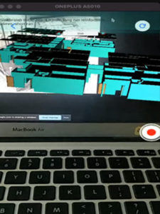

The virtual model of Virtual Pillar Drill Machine is designed to generate a virtual simulation of the subjected hardware
Virtual Power supply unit
Virtual power supply unity is proposed to demonstrate a digital function overview with part details in a game field digital simulation
Digital Universal dial indicater
The universal dial indicator tool has been created virtually through design simulation and to portray a virtual environment for understanding and explaining the work principal.
Virtual 5/2 way solenoid valve
The virtual simulation of the tool helps in breaking down the concept and generate the idea of work principle following the proposed tool
Digital Pnumetic way valve
The virtual model of the tool is proposed to generate the work principal a actual Pneumatic way Valve informatics for the simulation
Virtual radial drill machine
Virtual Radial Drill Machine is deployed to generate the information of an actual tool in a environment
Digital tool cutter and grinder
Digital tool cutter and grinder is deployed to generate a digital simulation of the tool show various application of the tool with detailed part description
Digital demonstration of valves
The digital simulation is deployed to provide information about various gauges in an interactive platform to generate information about the tool.
Appearition Pilot Project:

Ongoing Projects
1.Content Development using Adobe
2.E-Content for interactive and gamified training and assessment
3.Assessment Tool
4.Website for Block Chain
5.3D Assets
6.Paper Publications
Certificate in Introduction to Block Chain Technology
Certificate in Digital Painting
Internship Oppurtinites
Under Dvelopement
Center Patents/ Design Patents/ Copyrights:
Patent Title: Device to Provide Protection for Women by Using Smart Security Device
Copyright: Ratcheting Pedagogy on FDP
Robotic Service System for Railway Coaches - TEMP/E-1/4082/2019-KOL
Publications:
1) Chandrabhanu Pattanayak PLAYING WITH THE GODS: The Making and the Un-making of the Baba, in Religion and Social 2)Communication Journal of the Asian Research Center for Religion and Social Communication 13 1 pg 01-15 2015 1684-9184
2) Chandrabhanu Pattanayak Digitizing ñ The New Sanskritizing, Religion and Social Communication Journal of the Asian Research Center for Religion and Social Communication 14 1 Pg- 01-12 2016 1684-9184
3) Chandrabhanu Pattanayak The Dumbing of Indian Education Centurion Journal of Multidisciplinary Research 2 1 2016 2395-6216
4) Ambika Sankar Mishra ìKansara Gharani, Padmavati Raniî A study of Folk literature of Snake Charmers of Padmakesharpur, Page:213, Vol-12, 2019 Shodh Navneet 12 1 213-221 Jun-19 2019 "2321-65815) Ambika Sankar Mishra Privacy and the New Media Child Jagran International Journal on Contemporary Research 6 1 50-54 Jun-19 2019 2320-9372
6) Ambika Sankar Mishra A Boon to the Devotee Literaria 8 PG-9-18 Dec-18 2018 2229-4600
7) Ambika Sankar Mishra Band-AID TO BACARDI: A Perceptual Analysis of Portrayal of Women in Television Commercials Among working women of Hyderabad Edulight 7 13 PG-83-88 Jun-18 2018 2278:9545
8) Ambika Sankar Mishra Content Media and Communication: the story of ìjoDikhtahaiwohiBiktahaiî Media Jagat 12 1 Page-71-83 Jun-17 2018 2231-6566
9) Ambika Sankar Mishra Breaking of a Baba: 90 Hours of live coverage and baba gone down an opinion study on media coverage of Godman Sartahi issue by private Odia news Channels Journal Of Content, Community & Communication 4 1 PG-50-54 Dec-16 2017 2395-7514
10) Ms. Priya Shaw Perception, Media and Common Man with Special Reference to Simhasta- 2016 Communication Today 22 4 81-91 Nov-Dec 2018 0975-217X
11) Priya Shaw ìGender Equality in Advertisements: A Content Analysisî Jagran International Journal on Contemporary Research 6 1 55-60 February 2019 2320-9372
12) Sarat Kumar Jena ìRepresentation of Colonial Modernity in Ethnographic Novels in Indian Literature: A Critique of Tribal Identities in Colonial and Post-Colonial Narrativesî KALAKALPA 3 1 45-62 July 2018 2456-8201
13) Sarat Kumar Jena ìGender in Ancient Odia Poetry: Representation of Women in Charyapada Traditionî KALAKALPA 2 1 153-160 July 2017 2456-8201
14) Sarat Kumar Jena ìColonial Modernity in British Odisha: Rise of Fictional Narratives in Odia Literature: Locating Gopinath Mohantyís Tribal Narrativesî LOKARATNA 9 1 139-153 April 2016 2347-6427
15) Sarat Kumar Jena ìEthnic Identity and Nation: Politics of Representation of the Tribes in Indian Literature: Locating Techniques and Methodologies in Tribal Fictional Narrativesî The Challenge 14 1 78-87 June 2015 2278-9499
16) Ambika Sankar Mishra YouTube, Education and the Youth: A Perceptual Analysis Indian Journal of Natural Sciences 10 60 Data Not Available with me June 2020 0976 - 0997
17) Ambika Sankar Mishra †The Watchdog and the Bone Story: A study on Media and its Social Responsibility Adalya Journal PG-10-18 April 2020 1301-2746
18) AmbikaSankar Mishra WhatsAPP and Message forwarding Mukt Shabd Journal 10 5 393-400 MAY 2020 2347-3150
19) Ambika Sankar Mishra Students response on educational APPS: A study among college going students Gedrag & Organisatie 33 2 PG-1-10 June 2020 0921-5077
20) Ms Chinu Bohidar The Popularity and Influence of Chu Chu TV YouTube Channel on Kids Mukt Shabd Journal 9 5 2257-2269 May 2020 2347-3150
21) Ms Chinu Bohidar Social Networking Site Facebook using Habits of Women during Covid-19 Lock Down Mukt Shabd Journal 9 5 4897-4912 May 2020 2347-3150
22) Chinu Bohidar A study on the social media using habits of school students (DAV Public School Chandrasekharpur, Bhubaneswar) Desh Vikash 6 3 87-95 December 2019 2349-0519
23) Chinu Bohidar† The Effectiveness of Community Radio: A Study on Dhimsa Community Radio in Koraput District of Odisha Adalya Journal 9 4 720-737 APR 2020 1301-2746
24) Saban Kumar Maharana "Salient Features of the Mural Paintings in Odisha" Mukt Shabd Journal 9 6 5623-5628 JUNE 2020 2347-3150
25) Dr.Prajna pani Enhancing the Skills of Short-Presentations through Self-Evaluation, TEST Engineering & Management, ISSN 0193-4120, The Mattingley Publishing Co., Inc., Vol.†83, pp. 14396 ñ 14400, May-June 2020.
26) Dr.Prajna pani †Learning English at an Early Age to Support Industry 4.0, TEST Engineering & Management, ISSN 0193-4120, The Mattingley Publishing Co., Inc., Vol.†83, pp.†14067 - 14074, May-June 2020.
27) Dr.Prajna pani Where do we go from here and how? Gedrag & Organisatie, 0921-5077 in Volume 33 Issue 02, UGC-CARE and Web of Science Journal, April 2020.
28) Dr.Prajna pani †Attitude of Engineering Students towards English Language Learning, TEST Engineering & Management, ISSN 0193-4120, The Mattingley Publishing Co., Inc., Vol.†83, pp.†14401 - 14409, May-June 2020.
29) Dr.Prajna pani Opinion Mining: A Communication Tool for Career Makingî, Gedrag & Organisatie, 0921-5077, Volume 33 Issue 02, pp.501-511. (WOC), April 2020.
30) Dr.Prajna pani †T-learning for Educators: Where to Next & How, Journal of Xidian University, (Impact 5.4), Vol 14, Issue, 4, ISSN No:1001-2400 (UGC Care & Scopus), 2020/12/4.
31) Dr.Prajna pani Emotional Intelligence: A "Latent" Emotional Capability in Rural Women Entrepreneurs, Journal of Xidian University (Impact 5.4), Vol 14, Issue, 4, ISSN No:1001-2400 (UGC Care & Scopus), 771-779, 23/3/2020
32) Dr.Prajna pani †English Language Teaching in the Era of Industry 4.0, The WEI International Academic Conference Proceedings, Humanities and Social Sciences, ISSN 2167-3179, July 29-August 2, 2019, Harvard Faculty Club, Boston, USA, 107-117.
33) Dr.Prajna pani †Understanding Teacher Competencies for Effective Teaching Practices, A Review of Literature, Journal of Emerging Technologies and Innovative Research,†2349-5162 (Impact 5.87).
34) Dr.Prajna pani †De-gendering of Genderlect: A Case of Higher Education Institutions in Odisha, International Journal of Communication & Media Studies (IJCMS), ISSN (Print): 2250-0014; Impact Factor (JCC) (2018): 2.8058; NAAS Rating: 2.52; Vol-9, Issue-4; Edition: August 2019,pp.51-62.
35) Dr.Prajna pani Implications of Concepts, Theories and Models on Self-Efficacy and English Language Achievement,†International Journal of Management, Technology And Engineering,†ISSN NO : 2249-7455, Volume 8, Issue XII, Dec. 2018, pp. 5671-5679.(IMF: 6.3)
36) Dr.Prajna pani Reflections on English Language Teaching and Learning in English Medium Schools, Asian Journal of Research in Social Sciences and Humanities (ISSN 2249-7315), Vol. 8, No. 10, October 2018, pp. 1-18.
37) Dr.Prajna pani †Socio-cultural Practices in Saura Tradition, Research Chronicler, Vol. VI, Issue 1, 2018.
38) Dr.Prajna pani Living Pedagogically in the Digital Age: New Perspectives of English Language Teaching & Learning, Asian Quarterly: An International Journal of Contemporary Issues, ISSN 229-581X, Vol. 15, Issue no. 4, Feb 2018, pp.6-20.
39) Dr.Prajna pani †Mobile Apps for Active Ageing, Indian Journal of Gerontology, Vol.2, No.2, 2018.
40) Dr.Prajna pani Learning to Learn Attitude, Self Efficacy and Communication Exploring The Triad , Asian Journal of Management, ISSN:††2321-5763(Online), 0976-495X(Print), June 2017 (co-authored by Manasee Rath)
41) Dr.Prajna pani Emotional Intelligence in Higher Education: A Scale Development in International Journal of Education and Management Studies, IAHRW Publications Private Limited, ISSN: 2321-3671, e-ISSN: 2231-5632, Sept. 2017. (Co-authored by Amir B. & Anita P.)
42) Dr.Prajna pani Pedagogical Implications: Factors Affecting Learnersí Communication Efficacy, International Journal of Literary Studies, IAHRW Publications Private Limited, June 2017, 7 (1-2), 01-06 (co-authored by Manasee M.)
43) Dr.Prajna pani Communication Inventory: Selection and Validation with an Indian Population Sample, Asian Journal of Management, ISSN:† 2321-5763(Online), 0976-495X (Print), June 2017 (co-authored by Amir B.)
44) Dr.Prajna pani Essence of and a Model for Reflective Practice In Development Communication, PEOPLE: International Journal of Social Sciences, Special Issue, Vol.2, Issue 1, pp. 622-642, GRDS Publishing House, 14 Dec.2016
45) Dr.Prajna pani Career and Emotional Self-awareness: Micro initiatives for Macro impact, Indian Journal of Positive Psychology, June 2014, Vol.5, Issue 2, ISSN-p 2229-4937, pp. 213-215 (Co-author: Amir Behera)
46) Dr.Prajna pani Review of Emotional Intelligence: Connecting EI to Communication, Asian Journal of Research in Business Economics and Management, 2250-1673(PRINT), Asian Research Consortium, Vol. IV Issue ñII, Feb. 2014. (Co-author: Amir Behera), 52-59.
47) Dr.Prajna pani Metaphors of Memory in T.S Eliotís Poetry, Asian Journal of Research in Social Sciences and Humanities, Vol. 3, Issue IX,† Sept. 2013, ISSN: 2250-1665, Asian Research Consortium, Sept. 2013, pp. 34-43.
48) Dr.Prajna pani Reflections on the Existential Philosophy in T.S Eliotís Poetry,†Cosmos and History: The Journal of Natural and Social Philosophy, Cosmos Publishing Cooperative, Australia,†ISSN 1832-9101, vol. 9, no. 1,†2013, pp. 301-316.
49) Dr.Prajna pani Human Fallibility, Communication and Error Management, The Criterion: An International Journal in English, ISSN (0976-8165) Vol. III, Issue, IV, Dec. 2012,pp. 1-6.
50) Dr.Prajna pani Malady of the Modern Mind and Eliotian Metamorphosis, Asian Journal of Research in Social Sciences and Humanities, Vol. II, Issue ñXII, ISSN: 2250-1665, (0.315), Dec. 2012, pp.89-97.
51) Dr.Prajna pani Heard and Unheard Voice in Human Discourse, The Criterion: An International Journal in English, Vol. II. Issue. IV. ISSN-0976-8165, Dec. 2011, pp.1-5.
52) Dr.Prajna pani Communication Unbound - Coming to Know the Unknown: An Attitudinal Response, International Journal, and Language in India, ISSN 1930-2940, and Vol. 11: 10. Oct. 2011, 127-136.
53) Dr.Prajna pani Mobile Apps for Active Ageing, Indian Journal of Gerontology, Vol.2, No.2, 2018.
54) Dr.Prajna pani Lateral Thinking: A Communicative†Competency†and Capacity Building Technique, Centurion Journal of†Multi-disciplinary†Research, Vol.1, No.1, April-September 2015,†ISSN2395-6216(Print),†ISSN2395-6224(Online)
55) Dr.Prajna pani Transcending Inexorable Moments and Bringing EI to Work,†TECHNOINSIGHT,††a National Journal published by Rajiv Gandhi Forum, Orissa, affiliated to Rajiv Gandhi Foundation, New Delhi,†ISSN0975†ñ 4946, Vol.-IV, No.-1, Aug. 2012, pp-22-24.
56) Dr.Prajna pani Emotional Intelligence at Workplace, ELTI Journal, IASE, Rajasthan Bikaner, ISSN 2250 -317X, Vol.8, Sept. 2012, pp. 73-75.
57) Dr.Prajna pani Emotional Intelligence: Learning to Learn, Journal of English Language Teaching India, ELT@I, ISSN 0973-5208, VOL.48/4 2010, pp.30-36.
58) Dr.Prajna pani Useful Ignorance: Plants to Planchet, Repositioning Folklore and Indigenous Knowledge Systems, ISBN: 978-81-931721-0-0, Centurion University Press, India, 2016, pp. 192-197.
59) Dr.Prajna pani Exploring the Self through Assertive Communication, 21st†Century Learners: Learning Styles and Strategies, Proceedings of the 8th†International & 44th†Annual ETAI Conference, 18-20 July 2013, ISBN: 978-81-908397-9-2, Dept. of English and Foreign Languages, 2013, SRM University, Chennai: Green Pearl Publications Private Limited, pp. 17-20 (Co-author: Amir Behera)
60) Dr.Prajna pani Structuring Access to Global English: A Shift to Wirearchy, Teaching of English in India Today, A New Perspective, ISBN 978-93-5067-915-9, 2012, pp. 46-49.
61)Dr.Prajna pani Strategic Communication through Human Performance Technology, Soft Skills: Key to Excellence, First Edition 2010, ISBN: 978-81-8220-319-8, Global Vision Publishing House, INDIA, 508-513.
62) Avinash seekoli Improving Software Reliability using Fault Estimation Techniques & Software Metrics TEST Engineering and MAnagement 83 17063 - 17067 March 2020 ISSN:1934120
63) Abhilasha Akkala A multipurpose client server local area network chat communication in a secure manner International journal of analytical and expermental modal analysis 12 6 JUNE 2020 ISSN:0886-9367
64) Abhilasha Akkala Identify Occurrence of Substance Object of a Certain Classification in Fractional Videos and Pictures IJEAT 9 3728-3731 February 2020 2249-8958
65) Avinash seekoli RAW DATA PROCESSING WITH HQL AND PIG International Conference on Management, Sciences, Engineering and Applications (ICMSEA ) 20 87-95 May 2019 0973-4686
66) Abhilasha Akkala Textractor-extract optimal character in an image file International Conference on Management, Sciences, Engineering and Applications (ICMSEA ) 21 21-26 June 2019 0973-4686
1. Dr.Prajna pani Emotional Intelligence: Learning to Learn, Journal of English Language Teaching India, ELT@I, ISSN 0973-5208, VOL.48/4 2010, pp.30-36.
2. Dr.Prajna pani Strategic Communication through Human Performance Technology, Soft Skills: Key to Excellence, First Edition 2010, ISBN: 978-81-8220-319-8, Global Vision Publishing House, INDIA, 508-513.
1. Dr.Prajna pani Heard and Unheard Voice in Human Discourse, The Criterion: An International Journal in English, Vol. II. Issue. IV. ISSN-0976-8165, Dec. 2011,pp.1- 5.
2. Dr.Prajna pani Communication Unbound - Coming to Know the Unknown: An Attitudinal Response, International Journal, and Language in India, ISSN 1930- 2940, and Vol. 11: 10. Oct. 2011, 127-136.
1. Dr.Prajna pani Human Fallibility, Communication and Error Management, The Criterion: An International Journal in English, ISSN (0976-8165) Vol. III, Issue, IV Dec.2012,pp. 1-6.
2. Dr.Prajna pani Malady of the Modern Mind and Eliotian Metamorphosis, Asian Journal of Research in Social Sciences and Humanities, Vol. II, Issue ñXII, ISSN:2250-1665, (0.315), Dec. 2012, pp.89-97.
3. Dr.Prajna pani Transcending Inexorable Moments and Bringing EI to Work,†TECHNOINSIGHT,††a National Journal published by Rajiv Gandhi Forum, Orissa, affiliated to Rajiv Gandhi Foundation, New Delhi,†ISSN0975†ñ 4946, Vol.-IV, No.-1, Aug. 2012, pp-22-24.
4. Dr.Prajna pani Emotional Intelligence at Workplace, ELTI Journal, IASE, Rajasthan Bikaner, ISSN 2250 -317X, Vol.8, Sept. 2012, pp. 73-75.
5. Dr.Prajna pani Structuring Access to Global English: A Shift to Wirearchy, Teaching of English in India Today, A New Perspective, ISBN 978-93-5067-915-9,2012, pp.46-49.
1. Dr.Prajna pani Metaphors of Memory in T.S Eliotís Poetry, Asian Journal of Research in Social Sciences and Humanities, Vol. 3, Issue IX,† Sept. 2013, ISSN:2250- 1665, Asian Research Consortium, Sept. 2013, pp. 34-43.
2. Dr.Prajna pani Reflections on the Existential Philosophy in T.S Eliotís Poetry,†Cosmos and History: The Journal of Natural and Social Philosophy, Cosmos Publishing Cooperative, Australia,†ISSN 1832-9101, vol. 9, no. 1,†2013, pp. 301-316.
3. Dr.Prajna pani Exploring the Self through Assertive Communication, 21st†Century Learners: Learning Styles and Strategies, Proceedings of the 8th†International & 44th†Annual ETAI Conference, 18-20 July 2013, ISBN: 978-81-908397-9-2, Dept. of English and Foreign Languages, 2013, SRM University, Chennai: Green Pearl Publications Private Limited, pp. 17-20 (Co-author: Amir Behera)
1. Dr.Prajna pani Career and Emotional Self-awareness: Micro initiatives for Macro impact, Indian Journal of Positive Psychology, June 2014, Vol.5, Issue 2,ISSN- p 2229-4937, pp. 213-215 (Co-author: Amir Behera)
2. Dr.Prajna pani Review of Emotional Intelligence: Connecting EI to Communication, Asian Journal of Research in Business Economics and Management,2250- 1673(PRINT), Asian Research Consortium, Vol. IV Issue ñII, Feb. 2014. (Co-author: Amir Behera), 52-59.
1. Chandrabhanu Pattanayak PLAYING WITH THE GODS: The Making and the Un-making of the Baba, in Religion and Social 2)Communication Journal of the Asian Research Center for Religion and Social Communication 13 1 pg 01-15 2015 1684-9184
2. Sarat Kumar Jena ìEthnic Identity and Nation: Politics of Representation of the Tribes in Indian Literature: Locating Techniques and Methodologies in Tribal Fictional Narrativesî The Challenge 14 1 78-87 June 2015 2278-9499
3. Dr.Prajna pani Lateral Thinking: A Communicative†Competency†and Capacity Building Technique, Centurion Journal of†Multi-disciplinary†Research, Vol.1, No.1, April-September 2015,†ISSN2395-6216(Print),†ISSN2395-6224(Online)
1. Chandrabhanu Pattanayak Digitizing ñ The New Sanskritizing, Religion and Social Communication Journal of the Asian Research Center for Religion and Social Communication 14 1 Pg- 01-12 2016 1684-9184
2. Chandrabhanu Pattanayak The Dumbing of Indian Education Centurion Journal of Multidisciplinary Research 2 1 2016 2395-6216
3. Sarat Kumar Jena ìColonial Modernity in British Odisha: Rise of Fictional Narratives in Odia Literature: Locating Gopinath Mohantyís Tribal Narrativesî LOKARATNA 9 1 139-153 April 2016 2347-6427
4. Dr.Prajna pani Essence of and a Model for Reflective Practice In Development Communication, PEOPLE: International Journal of Social Sciences, Special Issue, Vol.2, Issue 1, pp. 622-642, GRDS Publishing House, 14 Dec.2016
5. Dr.Prajna pani Useful Ignorance: Plants to Planchet, Repositioning Folklore and Indigenous Knowledge Systems, ISBN: 978-81-931721-0-0, Centurion University Press, India, 2016, pp. 192-197.
1. Ambika Sankar Mishra Breaking of a Baba: 90 Hours of live coverage and baba gone down an opinion study on media coverage of Godman Sartahi issue by private Odia news Channels Journal Of Content, Community & Communication 4 1 PG-50-54 Dec-16 2017 2395-7514
2. Sarat Kumar Jena ìGender in Ancient Odia Poetry: Representation of Women in Charyapada Traditionî KALAKALPA 2 1 153-160 July 2017 2456-8201
3. Dr.Prajna pani Learning to Learn Attitude, Self Efficacy and Communication Exploring The Triad , Asian Journal of Management, ISSN:††2321-5763(Online), 0976-495X(Print), June 2017 (co-authored by Manasee Rath)
4. Dr.Prajna pani Learning to Learn Attitude, Self Efficacy and Communication Exploring The Triad , Asian Journal of Management, ISSN:††2321-5763(Online), 0976-495X(Print), June 2017 (co-authored by Manasee Rath)
5. Dr.Prajna pani Emotional Intelligence in Higher Education: A Scale Development in International Journal of Education and Management Studies, IAHRW Publications Private Limited, ISSN: 2321-3671,e-ISSN: 2231-5632, Sept. 2017. (Co-authored by Amir B. & Anita P.)
6. Dr.Prajna pani Pedagogical Implications: Factors Affecting Learnersí Communication Efficacy, International Journal of Literary Studies, IAHRW Publications Private Limited, June 2017, 7 (1-2), 01-06 (co-authored by Manasee M.)
7. Dr.Prajna pani Communication Inventory: Selection and Validation with an Indian Population Sample, Asian Journal of Management, ISSN:† 2321-5763(Online), 0976-495X (Print), June 2017 (co-authored by Amir B.)
1. Ambika Sankar Mishra A Boon to the Devotee Literaria 8 PG-9-18 Dec-18 2018 2229-4600
2. Ambika Sankar Mishra Band-AID TO BACARDI: A Perceptual Analysis of Portrayal of Women in Television Commercials Among working women of Hyderabad Edulight 7 13 PG-83-88 Jun-18 2018 2278:9545
3. Ambika Sankar Mishra Content Media and Communication: the story of ìjoDikhtahaiwohiBiktahaiî Media Jagat 12 1 Page-71-83 Jun-17 2018 2231-6566
4. Ms. Priya Shaw Perception, Media and Common Man with Special Reference to Simhasta- 2016 Communication Today 22 4 81-91 Nov-Dec 2018 0975-217X
5. Sarat Kumar Jena ìRepresentation of Colonial Modernity in Ethnographic Novels in Indian Literature: A Critique of Tribal Identities in Colonial and Post-Colonial Narrativesî KALAKALPA 3 1 45-62 July 2018 2456-8201
6. Dr.Prajna pani Implications of Concepts, Theories and Models on Self-Efficacy and English Language Achievement,†International Journal of Management, Technology And Engineering,†ISSN NO :2249-7455, Volume 8, Issue XII, Dec. 2018, pp. 5671-5679.(IMF: 6.3)
7. Dr.Prajna pani Reflections on English Language Teaching and Learning in English Medium Schools, Asian Journal of Research in Social Sciences and Humanities (ISSN 2249-7315), Vol. 8, No. 10,October 2018, pp. 1-18.
8. Dr.Prajna pani †Socio-cultural Practices in Saura Tradition, Research Chronicler, Vol. VI, Issue 1, 2018.
9. Dr.Prajna pani Living Pedagogically in the Digital Age: New Perspectives of English Language Teaching & Learning, Asian Quarterly: An International Journal of Contemporary Issues, ISSN 229-581X, Vol. 15, Issue no. 4, Feb 2018, pp.6-20.
10. Dr.Prajna pani †Mobile Apps for Active Ageing, Indian Journal of Gerontology, Vol.2, No.2, 2018.
11. Dr.Prajna pani Mobile Apps for Active Ageing, Indian Journal of Gerontology, Vol.2, No.2, 2018.
1. Ambika Sankar Mishra ìKansara Gharani, Padmavati Raniî A study of Folk literature of Snake Charmers of Padmakesharpur, Page:213, Vol-12, 2019 Shodh Navneet 12 1 213-221 Jun-19 2019 "2321-65815
2. Ambika Sankar Mishra Privacy and the New Media Child Jagran International Journal on Contemporary Research 6 1 50-54 Jun-19 2019 2320-9372
3. Priya Shaw ìGender Equality in Advertisements: A Content Analysisî Jagran International Journal on Contemporary Research 6 1 55-60 February 2019 2320-9372
4. Chinu Bohidar A study on the social media using habits of school students (DAV Public School Chandrasekharpur, Bhubaneswar) Desh Vikash 6 3 87-95 December 2019 2349-0519
5. Dr.Prajna pani †English Language Teaching in the Era of Industry 4.0, The WEI International Academic Conference Proceedings, Humanities and Social Sciences, ISSN 2167-3179, July 29-August 2,2019, Harvard Faculty Club, Boston, USA, 107-117.
6. Dr.Prajna pani †De-gendering of Genderlect: A Case of Higher Education Institutions in Odisha, International Journal of Communication & Media Studies (IJCMS), ISSN (Print): 2250-0014; Impact Factor (JCC) (2018): 2.8058; NAAS Rating: 2.52; Vol-9, Issue-4; Edition: August 2019,pp.51-62.
7. Avinash seekoli RAW DATA PROCESSING WITH HQL AND PIG International Conference on Management, Sciences, Engineering and Applications (ICMSEA ) 20 87-95 May 2019 0973-4686
8. Abhilasha Akkala Textractor-extract optimal character in an image file International Conference on Management, Sciences, Engineering and Applications (ICMSEA ) 21 21-26 June 2019 0973-4686
1. Ambika Sankar Mishra YouTube, Education and the Youth: A Perceptual Analysis Indian Journal of Natural Sciences 10 60 Data Not Available with me June 2020 0976 - 0997
2. Ambika Sankar Mishra †The Watchdog and the Bone Story: A study on Media and its Social Responsibility Adalya Journal PG-10-18 April 2020 1301-2746
3. AmbikaSankar Mishra WhatsAPP and Message forwarding Mukt Shabd Journal 10 5 393-400 MAY 2020 2347-3150
4. Ambika Sankar Mishra Students response on educational APPS: A study among college going students Gedrag & Organisatie 33 2 PG-1-10 June 2020 0921- 5077
5. Ms Chinu Bohidar The Popularity and Influence of Chu Chu TV YouTube Channel on Kids Mukt Shabd Journal 9 5 2257-2269 May 2020 2347-3150
6. Ms Chinu Bohidar Social Networking Site Facebook using Habits of Women during Covid-19 Lock Down Mukt Shabd Journal 9 5 4897-4912 May 2020 2347- 3150
7. Chinu Bohidar† The Effectiveness of Community Radio: A Study on Dhimsa Community Radio in Koraput District of Odisha Adalya Journal 9 4 720-737 APR 2020 1301-2746
8. Saban Kumar Maharana " Salient Features of the Mural Paintings in Odisha " Mukt Shabd Journal 9 6 5623-5628 JUNE 2020 2347-3150
9. Dr.Prajna pani Enhancing the Skills of Short-Presentations through Self-Evaluation, TEST Engineering & Management, ISSN 0193-4120, The Mattingley Publishing Co., Inc., Vol.†83, pp. 14396 ñ 14400,May-June 2020.
10. Dr.Prajna pani †Learning English at an Early Age to Support Industry 4.0, TEST Engineering & Management, ISSN 0193-4120, The Mattingley Publishing Co., Inc., Vol.†83, pp.†14067 - 14074,May-June 2020.
11. Dr.Prajna pani Where do we go from here and how? Gedrag & Organisatie, 0921-5077 in Volume 33 Issue 02, UGC-CARE and Web of Science Journal, April 2020.
12. Dr.Prajna pani †Attitude of Engineering Students towards English Language Learning, TEST Engineering & Management, ISSN 0193-4120, The Mattingley Publishing Co., Inc.,Vol.†83,pp.†14401-14409,May-June 2020.
13. Dr.Prajna pani Opinion Mining: A Communication Tool for Career Makingî, Gedrag & Organisatie, 0921-5077, Volume 33 Issue 02, pp.501-511. (WOC), April 2020.
14. Dr.Prajna pani †T-learning for Educators: Where to Next & How, Journal of Xidian University, (Impact 5.4), Vol 14, Issue, 4, ISSN No:1001-2400 (UGC Care & Scopus), 2020/12/4.
15. Dr.Prajna pani Emotional Intelligence: A "Latent" Emotional Capability in Rural Women Entrepreneurs, Journal of Xidian University (Impact 5.4), Vol 14, Issue, 4, ISSN No:1001-2400 (UGC Care & Scopus), 771-779, 23/3/2020
16. Avinash seekoli Improving Software Reliability using Fault Estimation Techniques & Software Metrics TEST Engineering and MAnagement 83 17063 - 17067 March 2020 ISSN:1934120
17. Abhilasha Akkala A multipurpose client server local area network chat communication in a secure manner International journal of analytical and expermental modal analysis 12 6 JUNE 2020 ISSN:0886-9367
18. Abhilasha Akkala Identify Occurrence of Substance Object of a Certain Classification in Fractional Videos and Pictures IJEAT 9 3728-3731 February 2020 2249- 8958

.png)